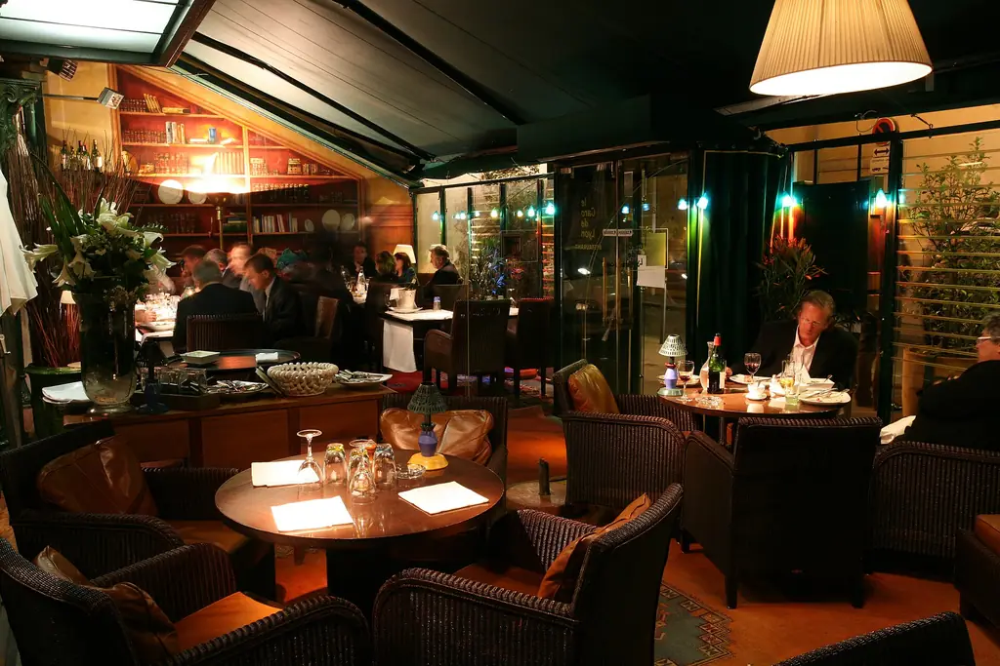
I
La Terrasse
Aux premières loges des pavés de Saint-Paul. On y voit passer tout le Vieux-Lyon, verre en main, des premiers beaux soirs aux nuits de festival.
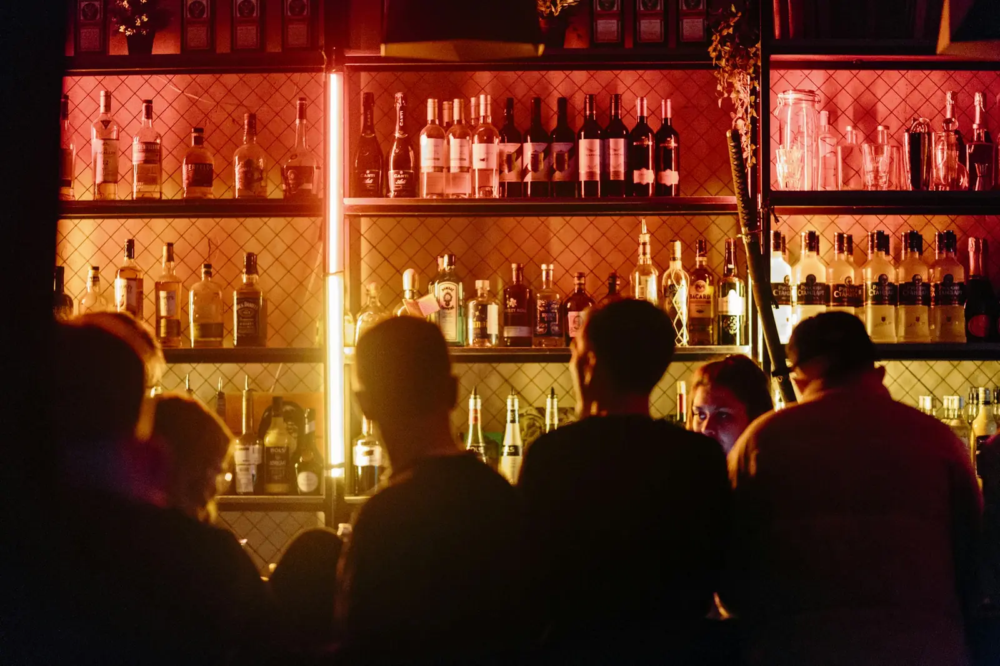
Pub écossais · Vieux-Lyon · depuis 2005
Un dram, une pinte, une rue qui ne dort pas. Le whisky a son adresse dans le Vieux-Lyon.
Le manifeste
Depuis 2005, au 2 rue Octavio Mey, on sert le Vieux-Lyon comme on reçoit des amis : un verre juste, une lumière basse, des pavés qui résonnent jusque tard. On vient pour un dram, on reste pour la soirée. Et quand la rue s'embrase, c'est ici qu'elle se donne rendez-vous.
L'équipe du Wallace
La cave
01/La carte
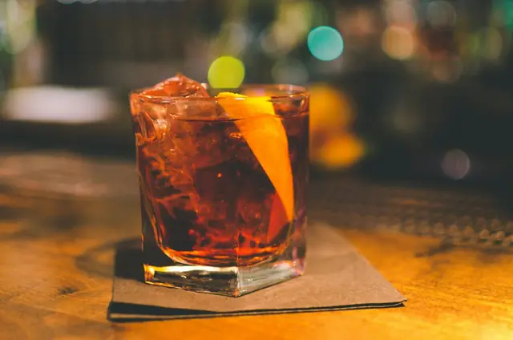
Trouvez votre dram
Plus de deux cents références. Tourbés, fruités, iodés : dites-nous ce que vous aimez, on vous trouve le dram.

Une trentaine de gins, chacun avec son tonic et sa garniture. Le gin tonic, version soignée.
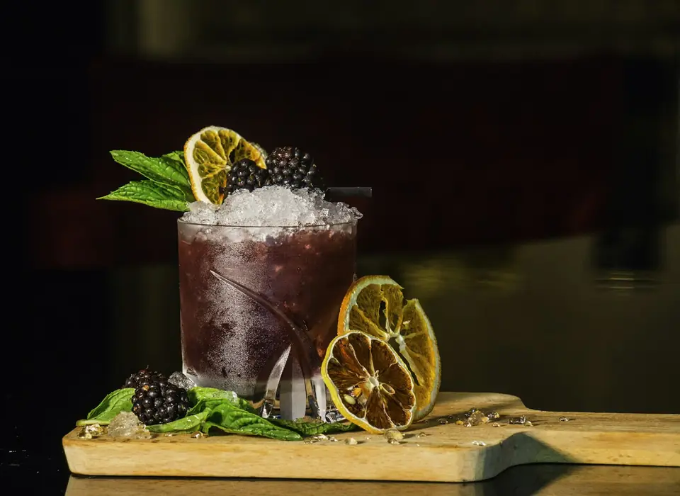
Des classiques tenus droits, quelques signatures maison, et le whisky souvent en premier rôle.
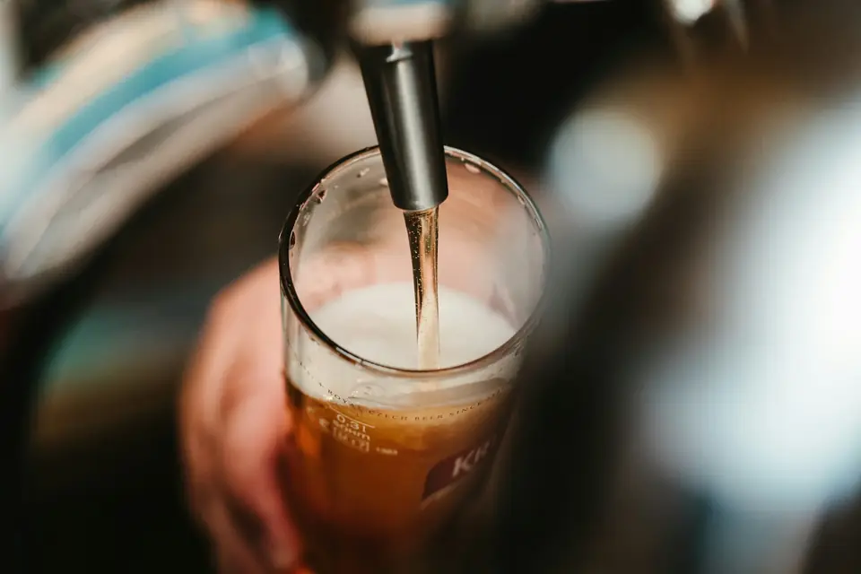
Seize tireuses, des incontournables et des invitées qui tournent. La pinte, comme il se doit.

De quoi tenir la soirée. Des assiettes généreuses, faites pour circuler autour de la table.
Prix indicatifs. La carte complète des 200 whiskies vous attend au comptoir.
02/La semaine
03/Deux ambiances

Aux premières loges des pavés de Saint-Paul. On y voit passer tout le Vieux-Lyon, verre en main, des premiers beaux soirs aux nuits de festival.

Plus feutré, plus calme. Pour les conversations qui comptent, les dégustations entre amis et les rendez-vous qu'on ne veut pas crier.
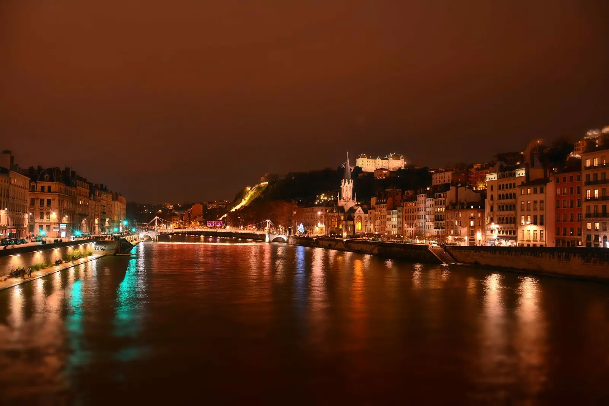
04/Saison des festivals
Quand Lyon fait la fête, la rue Octavio Mey devient la plus courue du Vieux-Lyon. Le Wallace est au milieu, portes ouvertes, tireuses prêtes.
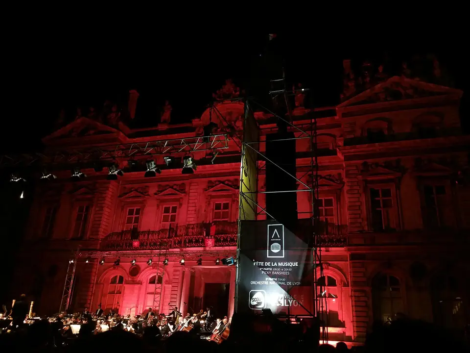
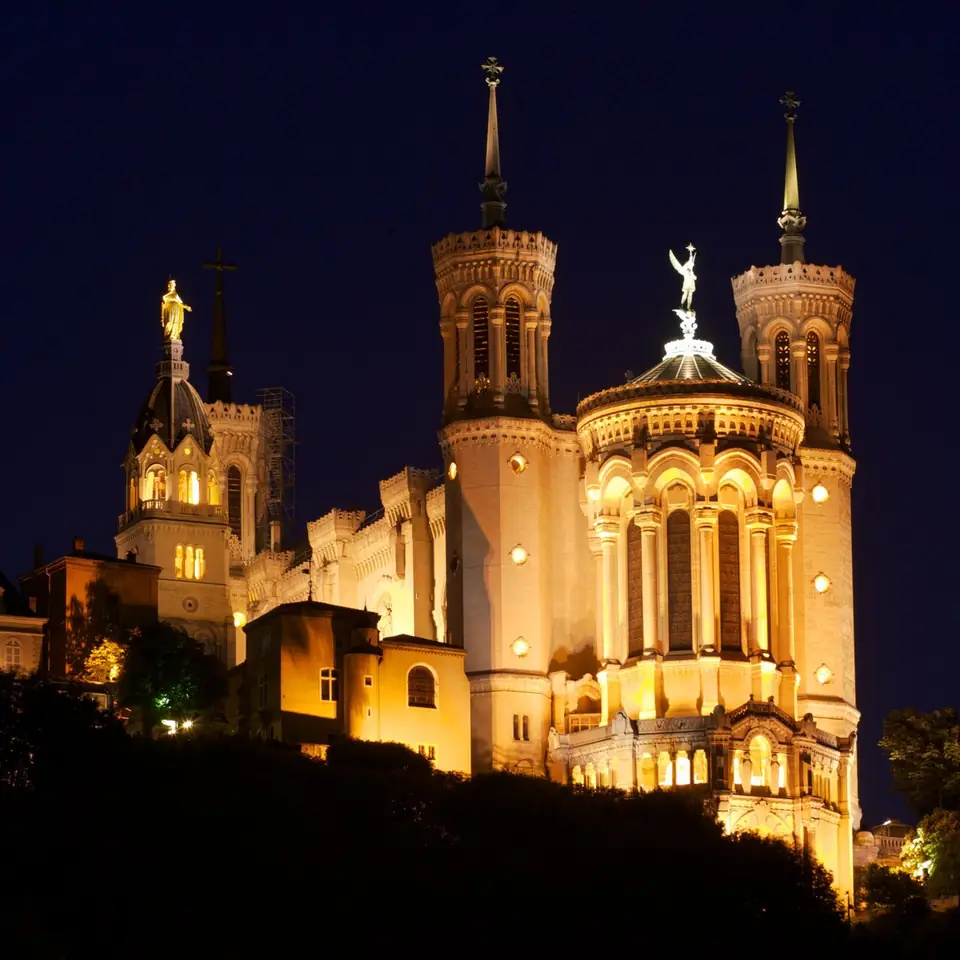
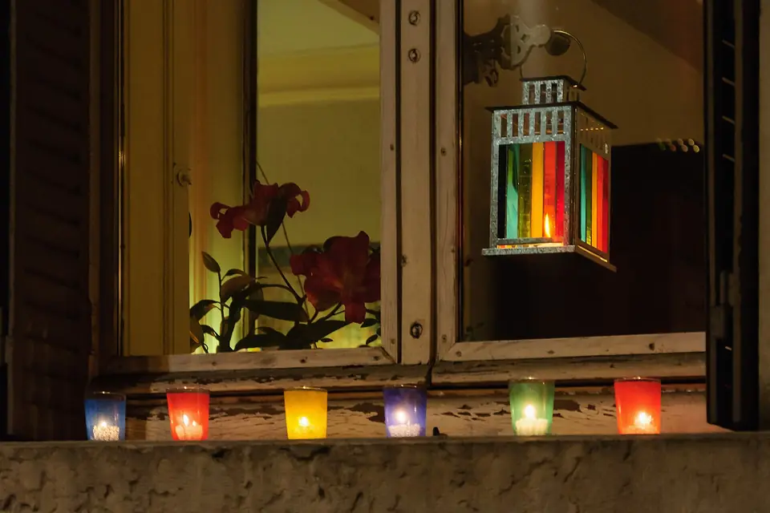
05/Galerie
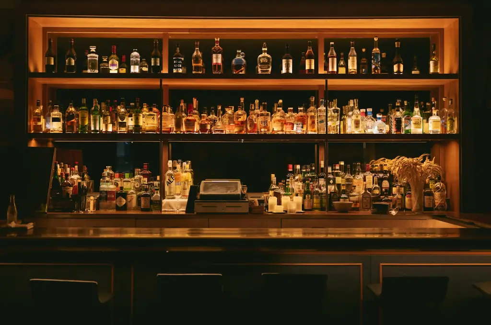
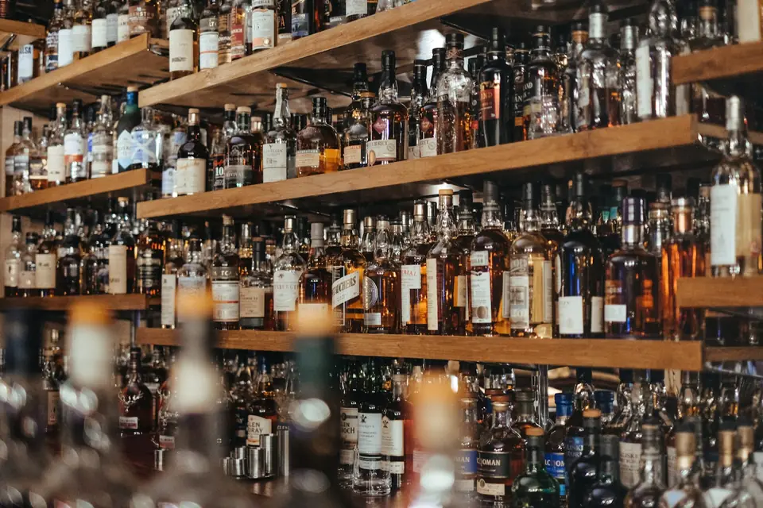
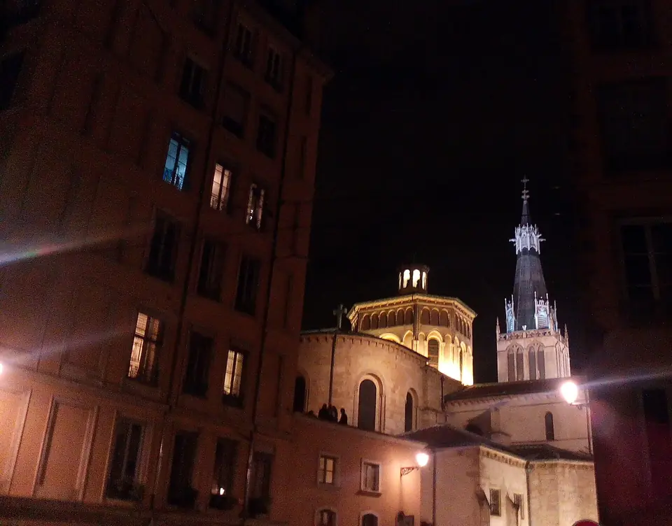
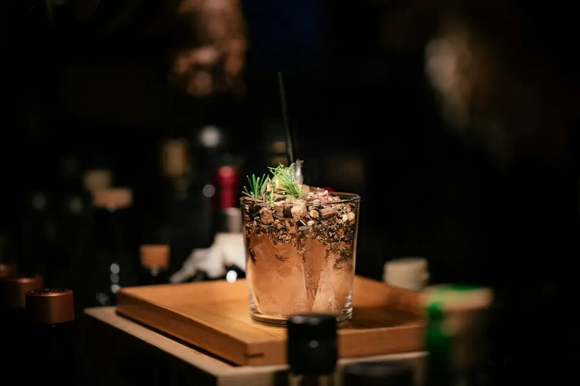
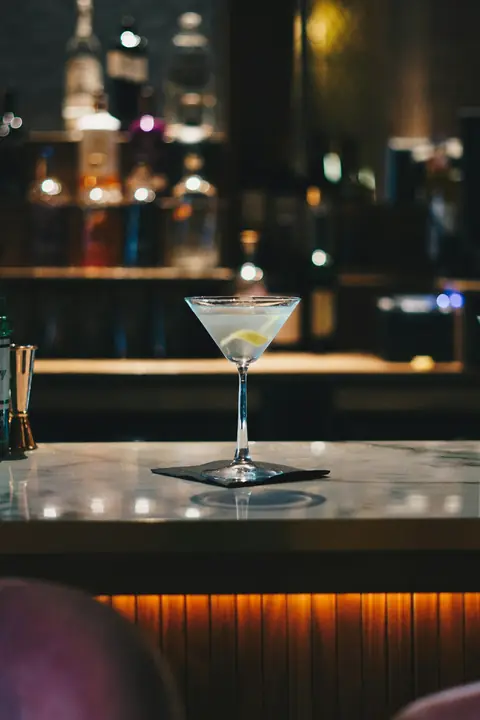
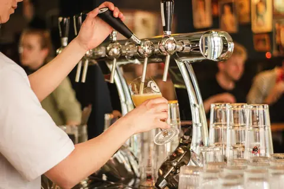
06/Infos & accès
Vieux-Lyon, quartier Saint-Paul.
Métro D Vieux-Lyon · gare Saint-Paul à deux pas.